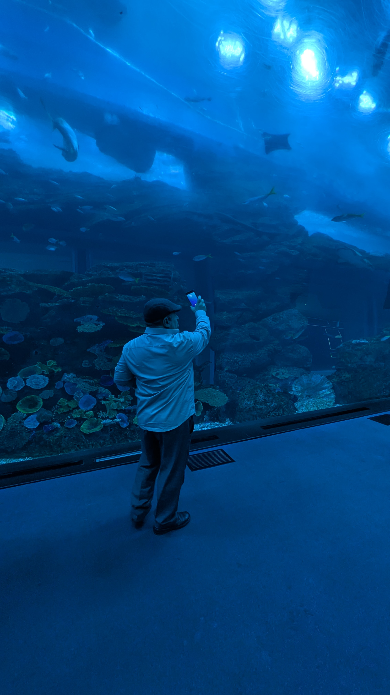

En ligne
J'écris sur un écran
avec un doigt.
Quelques secondes.
Quelques mots.
Puis publier.
Mon poème part
dans une lumière bleue
vers des inconnus.
Quelqu'un,
à Tokyo,
le lit peut-être
dans le métro.
Quelqu'un,
à Alger,
fait défiler mon visage
sans savoir mon nom.
Un cœur rouge apparaît.
Puis deux.
Puis rien.
Le poème demeure pourtant
quelque part
entre deux notifications.
Nous sommes devenus
des silhouettes connectées,
des pensées en fragments,
des vies compressées
dans des carrés lumineux.
Nous partageons nos nuits
avec des gens
que nous ne rencontrerons jamais.
Et parfois
une phrase de quinze mots
traverse la solitude
d'une personne
à l'autre bout du monde.
Alors je continue d'écrire.
Pas pour l'algorithme.
Pas pour les chiffres.
Mais pour cette étrange possibilité :
qu'une pensée née
dans ma chambre
puisse devenir,
l'espace d'un instant,
une lumière
dans la nuit de quelqu'un.
Djamel Metref
At Yenni le 18 Août 2026
← Tous les poèmes
En ligne
Écriture et poésie · Vie numérique · Liens humains